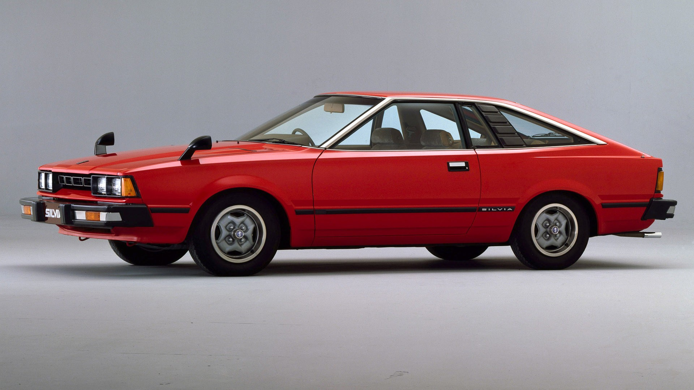

 |
AÑO DE LANZAMIENTO: 1979. MOTOR: 1.8 turbo y otro 2.4 L. POTENCIA: 135cv. VELOCIDAD MÁXIMA: 205 km/h El Silvia S11 (vendido en Estados Unidos y Canadá como Datsun 200SX y en México como Datsun Sakura, flor de cerezo en japonés), estuvo disponible como compacto de capota dura 2 puertas y en una nueva carrocería compacta 3 puertas. La versión japonesa del compacto se denominó Gazelle y fue exclusiva para la Nissan Bluebird Store junto al Nissan Fairlady Z, mientras que la carrocería cupé fue exclusiva para la Nissan Prince Store junto al Skyline. Su estilo fue similar al nuevo Nissan Leopard berlina y cupé, también exclusivo para la Nissan Bluebird Store. |